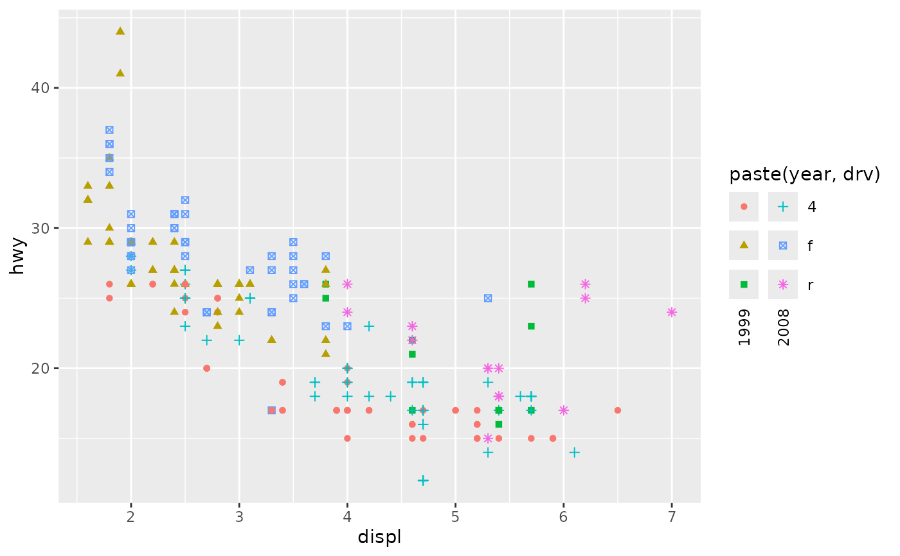
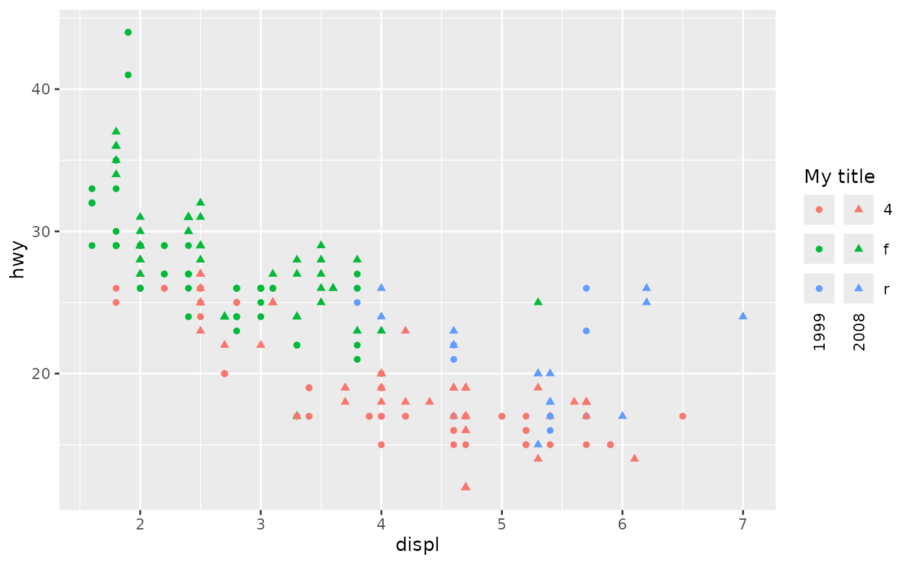
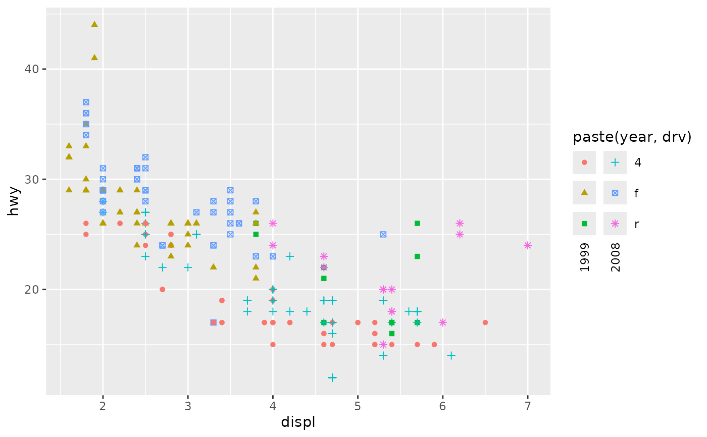
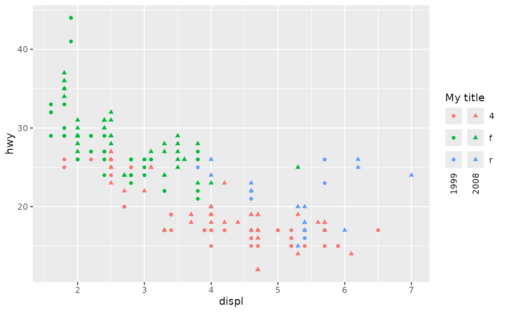

This is a legend type similar to guide_legend()
that displays crosses, or: interactions, between two variables.
Usage
guide_legend_cross(
key = NULL,
title = waiver(),
swap = FALSE,
col_text = element_text(angle = 90, vjust = 0.5),
override.aes = list(),
reverse = FALSE,
theme = NULL,
position = NULL,
direction = NULL,
order = 0
)Arguments
- key
One of the following key specifications:
A group split specification when using the legend to display a compound variable like
paste(var1, var2).A standard key specification, like
key_auto(), when crossing two separate variables across two scales.
- title
A
<character[1]>or<expression[1]>indicating the title of the guide. IfNULL, the title is not shown. The default,waiver(), takes the name of the scale object or the name specified inlabs()as the title.- swap
A
<logical[1]>which whenTRUEexchanges the column and row variables in the displayed legend.- col_text
An
<element_text>object giving adjustments to text for the column labels. Can beNULLto display column labels in equal fashion to the row labels.- override.aes
A named
<list>specifying aesthetic parameters of the key glyphs. See details and examples inguide_legend().- reverse
A
<logical[2]>whether the order of the keys should be inverted, where the first value controls the row order and second value the column order. Input as<logical[1]>will be recycled.- theme
A
<theme>object to style the guide individually or differently from the plot's theme settings. Thethemeargument in the guide overrides and is combined with the plot's theme.- position
A
<character[1]>giving the location of the guide. Can be one of"top","bottom","left"or"right".- direction
A
<character[1]>indicating the direction of the guide. Can be on of"horizontal"or"vertical".- order
A positive
<integer[1]>that specifies the order of this guide among multiple guides. This controls in which order guides are merged if there are multiple guides for the same position. If0(default), the order is determined by a hashing indicative settings of a guide.
See also
Other standalone guides:
guide_axis_base(),
guide_axis_dendro(),
guide_axis_nested(),
guide_circles(),
guide_colbar(),
guide_colring(),
guide_colsteps(),
guide_legend_base(),
guide_legend_group()
Other legend guides:
guide_legend_base(),
guide_legend_group()
Examples
# Standard use for single aesthetic. The default is to split labels to
# disentangle aesthetics that are already crossed (by e.g. `paste()`)
ggplot(mpg, aes(displ, hwy)) +
geom_point(aes(colour = paste(year, drv))) +
guides(colour = "legend_cross")
 # If legends should be merged between identical aesthetics, both need the
# same legend type.
ggplot(mpg, aes(displ, hwy)) +
geom_point(aes(colour = paste(year, drv), shape = paste(year, drv))) +
guides(colour = "legend_cross", shape = "legend_cross")

# Crossing two aesthetics requires a shared title and `key = "auto"`. The
# easy way to achieve this is to predefine a shared guide.
my_guide <- guide_legend_cross(key = "auto", title = "My title")
ggplot(mpg, aes(displ, hwy)) +
geom_point(aes(colour = drv, shape = factor(year))) +
guides(colour = my_guide, shape = my_guide)

# You can cross more than 2 aesthetics but not more than 2 unique aesthetics.
ggplot(mpg, aes(displ, hwy)) +
geom_point(aes(colour = drv, shape = factor(year), size = factor(drv))) +
scale_size_ordinal() +
guides(colour = my_guide, shape = my_guide, size = my_guide)
# You can merge an aesthetic that is already crossed with an aesthetic that
# contributes to only one side of the cross.
ggplot(mpg, aes(displ, hwy)) +
geom_point(aes(colour = paste(year, drv), shape = drv)) +
guides(
colour = guide_legend_cross(title = "My Title"),
shape = guide_legend_cross(title = "My Title", key = "auto")
)
# If legends should be merged between identical aesthetics, both need the
# same legend type.
ggplot(mpg, aes(displ, hwy)) +
geom_point(aes(colour = paste(year, drv), shape = paste(year, drv))) +
guides(colour = "legend_cross", shape = "legend_cross")

# Crossing two aesthetics requires a shared title and `key = "auto"`. The
# easy way to achieve this is to predefine a shared guide.
my_guide <- guide_legend_cross(key = "auto", title = "My title")
ggplot(mpg, aes(displ, hwy)) +
geom_point(aes(colour = drv, shape = factor(year))) +
guides(colour = my_guide, shape = my_guide)

# You can cross more than 2 aesthetics but not more than 2 unique aesthetics.
ggplot(mpg, aes(displ, hwy)) +
geom_point(aes(colour = drv, shape = factor(year), size = factor(drv))) +
scale_size_ordinal() +
guides(colour = my_guide, shape = my_guide, size = my_guide)
# You can merge an aesthetic that is already crossed with an aesthetic that
# contributes to only one side of the cross.
ggplot(mpg, aes(displ, hwy)) +
geom_point(aes(colour = paste(year, drv), shape = drv)) +
guides(
colour = guide_legend_cross(title = "My Title"),
shape = guide_legend_cross(title = "My Title", key = "auto")
)